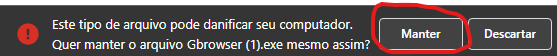

Porque apareceu com se fosse um Virus?
Porque aconteceu?
Provavelmente por conta da linguagem usada no Navegador, Python, pois com ela é posível criar um vírusResolução do Problema
Portanto se você ter esse problema é só clicar em "manter" Tem Para Linux?, MAC OS, Android ou iphone?
Por enquanto não pois ainda não, mas serão sim laçadas versões para Linux, MAC OS e etc... Mas isso pode demorar